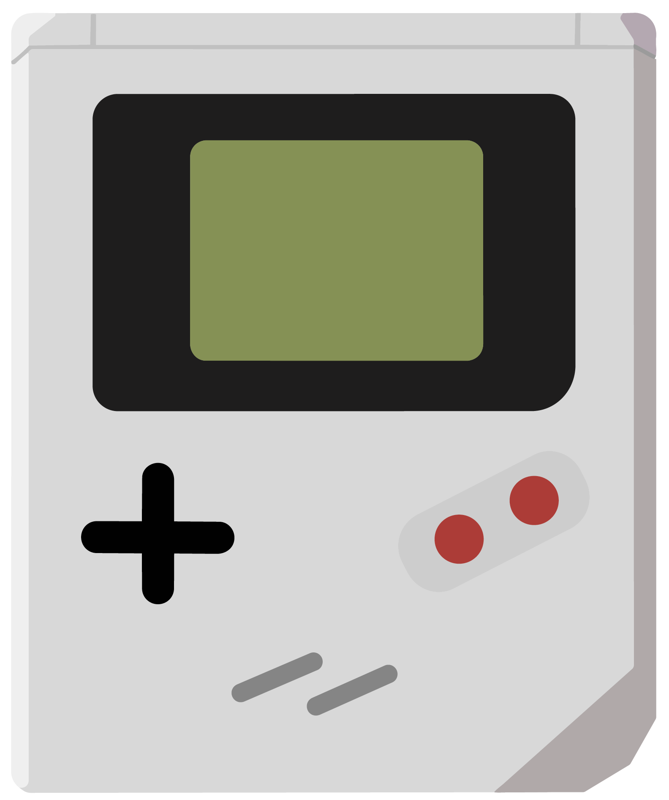
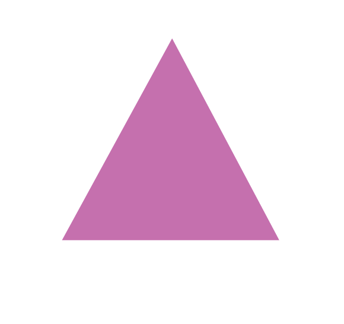
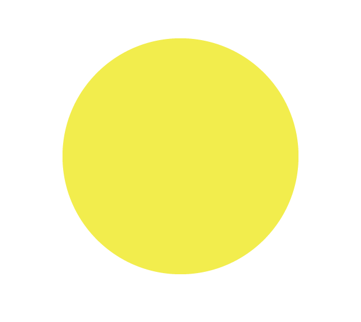
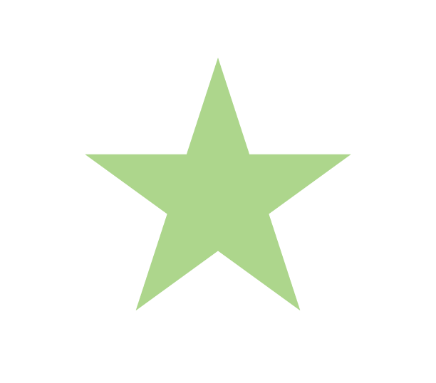
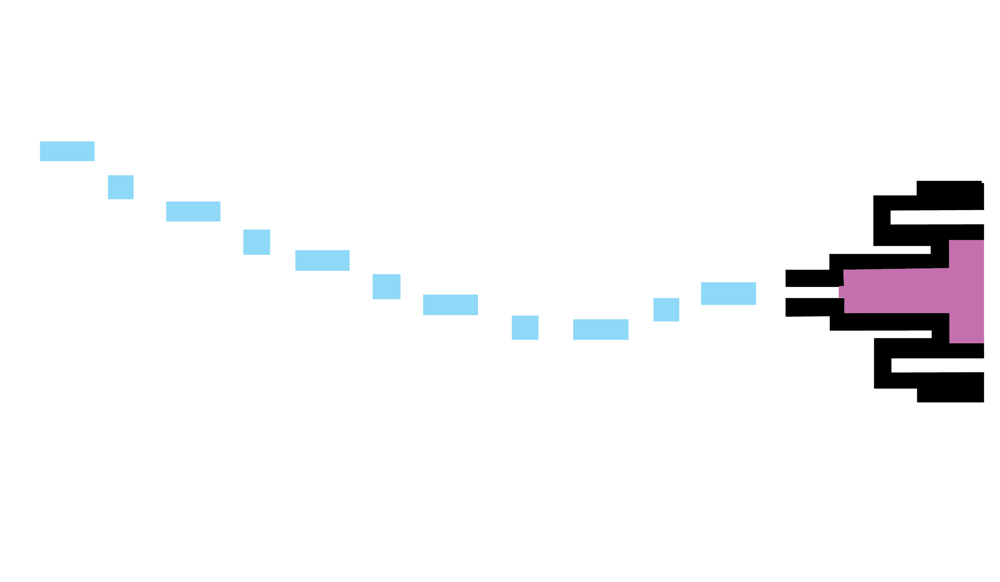
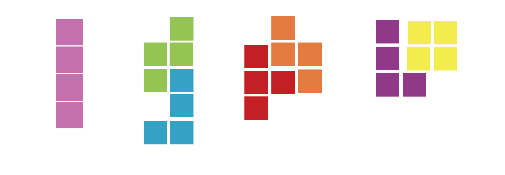
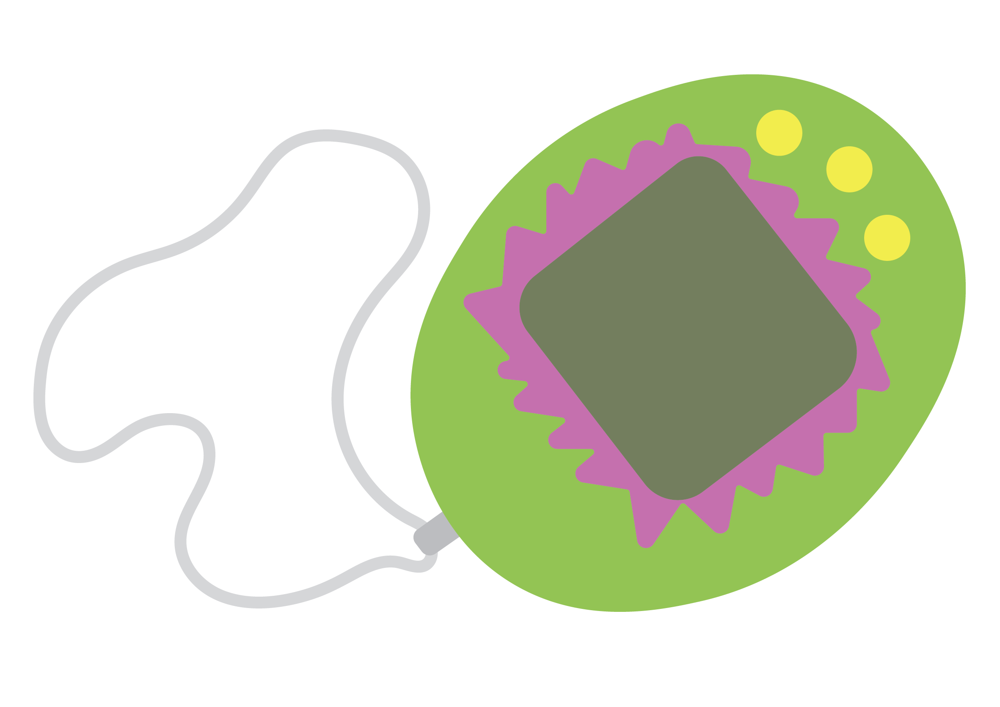

A B C D E F G
H I J K L M
N O P Q R S T U
V W X Y Z
1 2 3 4 5
6 7 8 9 0
! @ # $ % ^ &
*()? <>””:;[]{}`~




Dotgothic 16 is based on the old 16x16 Gothic bitmap font that recreates the feel of pixel fonts from old video games, cell phones and computer screens on print. With its high readability, this font has become more popular in recent years due to the growing popularity of pixel art.
A B C D E F G
H I J K L M
N O P Q R S T U
V W X Y Z
1 2 3 4 5
6 7 8 9 0
! @ # $ % ^ &
*()? <>””:;[]{}`~

PIXELS BITMAP COMPUTER VIDEOGAME

DotGothic16 is a font that makes people think of quite a few different things. One of them being pixels. Just like the description says, the font was made with the intent to recreate the feel of old video game style text and 8-bit vibes.
Like most pixel fonts, DotGothic16 was designed with a bitmap, or a very small grid, that helps turn regular letters into pixelated, but still readable, typefaces.
DotGothic16 was designed, as stated before, with the intent to recreate the feelings and looks of text on old style screens. One of those screens is a computer screen of course. The font almost reminds me of the text seen in movies like “The Matrix” or “Men in Black”.
Video games were definitely an important factor in how this typeface was designed. The 8-bit feel and nostalgia that hits your brain as soon as you read it was one of the selling points for the basis of this font.

9AM-8PM October 1st-22nd
A convention showing off and informing people on collections of retro video games, circa 1985-2005
10PM, Normal Theater
A movie marathon of classic sci-fi films in an authentic antique theater still stuck in time.
Doors at 8PM
A rave-like birthday dance party-must be dressed according to the era!